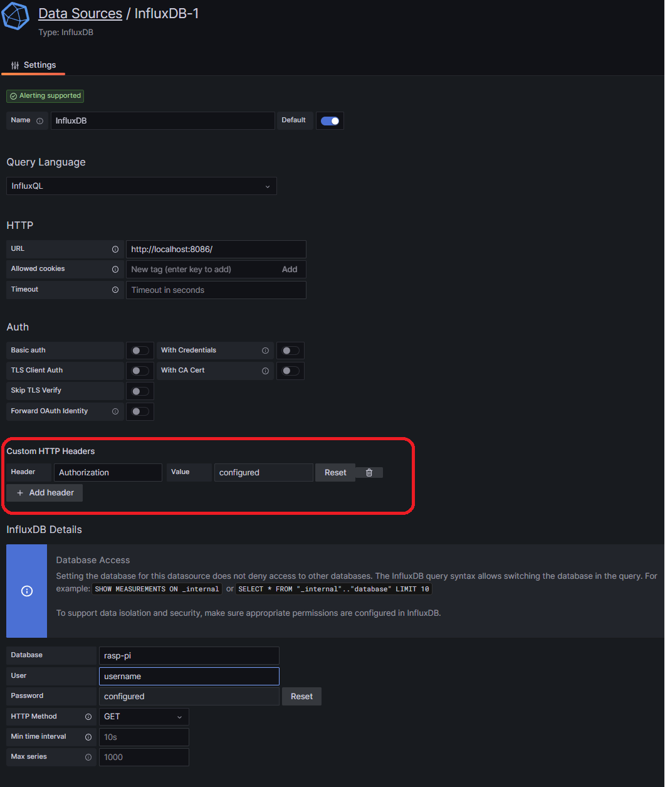

Week 2: Python on a remote system#
In this week, you’ll start using a remote system as a target for your Python projects. Of course, a Single Board Computer(SBC) can be a powerful system and you could use this to develop your application natively. But this is less fun than using the SBC as “just another embedded target”. Instead, you’ll continue to use your Windows host for software development and only run and debug the application on your SBC. This style of work – known as cross development – is often used for smaller systems that cannot run their own development environment natively.
Day 1: Setting up the remote system#
Theoretical part: study Chapter 9: “The Iterator Pattern” and Chapter 10: “Python Design Patterns I”. Make the exercises at the end of each chapter.
Practical part: setting up your the remote system.
- The first step is to load the Ubuntu Operating System on a SD-card.
Goto https://wiki.odroid.com/getting_started/os_installation_guide#tab__odroid-m1
Download the “Server” image.
Follow the instructions from the side.
Note
The username/password is standard ordoid/odroid
The first step is to load the Raspberry Pi Operating System on a SD-card.
See the documentation from https://www.raspberrypi.com/documentation/computers/getting-started.html
Follow the instructions from https://www.raspberrypi.org/software/. The recommended way is using the Raspberry Pi Imager.
Important
Make sure to install the Raspberry PI OS (64-bit) OS.
Connect a display, a keyboard and a mouse to your remote system, insert the SD-card into the SD-slot and power-up your SBC. Go and explore what is available on your new computer.
Note
Please ensure that your SBC is on the same network as your laptop.Please note the IP-address of your SBC from the command:ifconfig eth0ifconfig wlan0
Install PuTTY on your Windows computer from https://putty.org/. You can now start an SSH session from your Windows machine to your SBC using PuTTY.
You can continue exploring the capabilities of your SBC and install new software when you want to. Use “apt” to install new packages, see https://itsfoss.com/apt-command-guide/.
You have a fully independent way to start a session on your SBC from your Windows computer. You can use PuTTY/SSH to start a terminal session.
Install the “xrdp” package on your SBC to enable a remote desktop connection from your laptop, see https://www.youtube.com/watch?v=qJ4jfqpL3Ck. You can now start an RDP session on your Windows computer and connect to your SBC.
You have now two fully independent ways to start a session on your SBC from your Windows computer. You can use PuTTY/SSH to start a terminal session and you can use RDP to start a full desktop session.
Tip
If you need to find-out your laptop’s IP address, try running ipconfig from the command line.
Day 2: Cross Development#
Theoretical part: study Chapter 11: “Python Design Patterns II” and Chapter 12: “Testing Object-Oriented Programs”. Make the exercises at the end of each chapter.
Practical part: Cross Development on your SBC
The idea of cross development is that you use a full featured development system, running rich IDEs and other tools, for developing your code that is actually executed on a smaller embedded device. In the case of a Raspberry Pi or Odroid it would be possible to develop natively on the it, but the SBC also provides a nice training environment to exercise with cross-development. Smaller systems don’t have the luxury of native development and then cross-development is the way to go.
The first step is to set-up file sharing for efficient interaction between your laptop and your SBC. On your Windows computer, enable file sharing (see 6.1).
File a good place for your files and export that location. Mine is in C:\Users<myname>workspace. Right-click that folder name, select properties and visit the tab “Sharing”. You can enable the share using the “Advanced Sharing” option. Once this is completed, you can see your share in the network locations in your Windows explorer.
- On your SBC, install a Samba client following the instructions in https://www.raspberrypi.com/documentation/computers/remote-access.html#samba-smbcifs.Please note, when specifying your credentials in the mount command to include the domain of your Windows user, e.g.
mkdir ~/windowshare
sudo mount.cifs //<laptops hostname or IP address>/share /home/<username>/windowshare -o user=<name>,domain=CORP,vers=3.11
Note
you can also make your SBC a Samba server. You’ll find the instructions to do so on the same Samba page. With your SBC running a Samba server you can easily put files on your SBC’s file system.
Tip
using the mount.cifs command you’re actually logging into your Windows computer again. Therefore, use your Windows credentials for username and password.
Day 3: Network Application Programming#
Theoretical part: More on Patterns! You’ve gone through the material provided in the textbook. But pattens are such an important concept, that it can hardly be explained enough in just two chapters and delt with in just two days. Therefore, we’ll make some more time to study patterns from other sources. Study the material found in https://github.com/faif/python-patterns or use https://www.geeksforgeeks.org/python-design-patterns/.
Practical part: network programming using MQTT.
MQTT is a lightweight and easy to use network protocol, developed for applications with little resources. It is well suited for transmitting the data from a single sensor, but also for more data intensive applications. Many IoT applications make use of MQTT or one of the similar protocols. Read the introduction on https://mqtt.org/. You may also find useful information on https://en.wikipedia.org/wiki/MQTT.
MQTT requires a broker. Install Eclipse’s Mosquitto on your SBC, see https://mosquitto.org/. Of course, you’ll install Mosquitto using:
sudo apt-get install mosquitto
Once your MQTT-broker is running, you’ll need a client application to start playing around with MQTT. Install MQTT-explorer on your laptop and configure it to connect to the MQTT-broker on your SBC. You can get MQTT-explorer from here: http://mqtt-explorer.com/.
Follow the tutorial on https://www.emqx.io/blog/how-to-use-mqtt-in-python to create your first Python MQTT applications. Please note that the sample code in this tutorial uses some broker on the Internet, at broker.emqx.io, whereas you can use your own on your Pi.
When you’re working on the same network, you can hook-up to the same MQTT-broker. Subscribing both a listener allows you so see the MQTT-messages appear simultaneously in multiple locations; having multiple applications posting messages allows you to observe the interaction of multiple senders.
You will find that the code of the MQTT-examples has some hardcoded parameters, e.g. the broker address, the port of the broker, and some more. We would like to pick-up these parameters from the command line. Python has an elegant command line parser, argparse. On the page https://realpython.com/command-line-interfaces-python-argparse/ you’ll find a good explanation how to use argparse. Rewrite the MQTT applications to make use of argparse for all parameter handling.
Day 4: Concurrency and AsyncIO#
The theory for today is about multi-programming and concurrency. These are techniques to have multiple control flows or tasks running more-or-less in parallel. Even in the case that the tasks share one physical compute resource, e.g. one single core, the tasks may appear to work independently and simultaneously. Python has inherent difficulties with concurrency, due to its inner structure. You may already have wondered why you needed 2 Python MQTT applications, yesterday.
With AsyncIO a new paradigm is introduced that overcomes these hurdles. AyncIO provides a very elegant, Pythonic way for implementing concurrency in programs.
Study Chapter 13: “Concurrency”. Make the exercises at the end of the chapter. This chapter gives a condensed introduction to Python’s Asyncio concepts. Also study the more elaborate tutorial on https://realpython.com/async-io-python/. The library pages on AsyncIO differentiate between the High-level API and the Low-level API. You’ll find useful information for the usage of AsyncIO in network programs in the Low-level API.
Practical part: use AsyncIO to implement concurrency in your MQTT applications.
Once you have completed the RealPython tutorial on AsyncIO, you can use https://pypi.org/project/asyncio-mqtt/ to understand what the AsyncIO-flavored MQTT implementation looks like. Use these ingredients to rewrite the publish and subscribe applications, created yesterday, into one single application, doing both tasks.
Day 5: IoT and Grafana#
You’ve completed the entire book “Python 3 Object-Oriented Programming”, theory is up for this course. The Internet of Things deals with devices and their data using the Internet. It is common to have a centralized data processing and management service on the Internet, often in the cloud, and to connect remote devices to such a service. In the architecture of common IoT application, one can distinguish a couple of common practices or components:
The remote devices are typically light weight. A dedicated connection agent, with small footprint, establishes the connection to the Internet services and is responsible for the data exchange.
Sometimes, e.g. in factory automation, the data from the remote devices is concentrated before transmitting this over the Internet. The concentration devices are referred to as Edge devices.
In the cloud, after taking care of authentication and authorization, the data is shared via a streaming framework. The data is short-lived in such a streaming framework, up to a couple of hours. Multiple applications can subscribe to parts of the data and receive that data as soon as new information arrives.
Analysis requiring longer time series will use a streaming or time-series database. Unlike traditional SQL databases, these streaming databases will not reproduce exactly the data as it is stored. Instead, they can summarize data, e.g. store an event count in an interval instead of each and every event in that interval, and they can forget data after an expiration period.
Visualization of the data in streaming databases is typically the first step in data processing. By looking at the data, you can start understanding what is happening with your remote devices. In a later stage, one can add automatic processing of data.
Today, you’ll toy around with a miniature set-up for IoT applications, skipping a step or two and merging a few steps into one. The exercise for today will guide you through the Telegraf – Influxdb – Grafana (TIG) suite. In this training, you’ll monitor the resource usage of your own SBC on the very same machine. The data will be captured using an application Telegraf and stored in a streaming database Influxdb. Then, you’ll visualize the contents of the database using Grafana.
First install and start the services:
Install grafana#
sudo apt-get install -y apt-transport-https
sudo apt-get install -y software-properties-common wget
sudo wget -q -O /usr/share/keyrings/grafana.key https://apt.grafana.com/gpg.key
echo "deb [signed-by=/usr/share/keyrings/grafana.key] https://apt.grafana.com stable main" | sudo tee -a /etc/apt/sources.list.d/grafana.list
sudo apt-get update
sudo apt-get install grafana
Install influxdb and telegraf#
wget -q https://repos.influxdata.com/influxdata-archive_compat.key
echo '393e8779c89ac8d958f81f942f9ad7fb82a25e133faddaf92e15b16e6ac9ce4c influxdata-archive_compat.key' | sha256sum -c && cat influxdata-archive_compat.key | gpg --dearmor | sudo tee /etc/apt/trusted.gpg.d/influxdata-archive_compat.gpg > /dev/null
echo 'deb [signed-by=/etc/apt/trusted.gpg.d/influxdata-archive_compat.gpg] https://repos.influxdata.com/debian stable main' | sudo tee /etc/apt/sources.list.d/influxdata.list
sudo apt-get update && sudo apt-get install influxdb2 && sudo apt-get install telegraf
Start the services#
sudo service influxdb start
sudo service grafana-server start
After setting up the environment follow the steps from: https://randomnerdtutorials.com/monitor-raspberry-pi-influxdb-telegraf/.
Grafana Configuration#
Now go to the Grafana frontend.
Add the influxdb as an datasource:
Pay attention to the red box. We have to add an extra header to make the InfluxQL to work. The header must be “Authorization” and the value is “Token <the influxdb token>”. [1]
To add the first dashboard, mouse over the + just below the Grafana Search at the main page and choose Import. Enter the ID 10578 and Load.
Following a ready-made tutorial to set-up the monitoring of your SBC in Grafana is nice but adding your own code for your own data is even better. Have a look at https://github.com/influxdata/influxdb-client-python, create a small Python application that pushes some random data every second to InfluxDb and extend the current dashboard to display your random data as well.
Summary of the second week#
In the second week of this training, you again covered many topics:
You’ve installed and started working with your SBC. On the fly, you have seen the most important concepts to install packages and to start, restart and stop system services.
- You’ve exercised with many ways to connect to your SBC over a network:
Using SSH
Using RDP
Using Samba
Using a remote debugger
Using MQTT
Using a webserver, i.e. Grafana
You’ve created your first remote monitoring IoT application, using Telegraf, InfluxDb and Grafana.